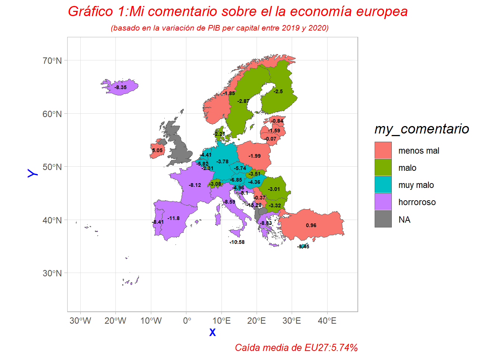
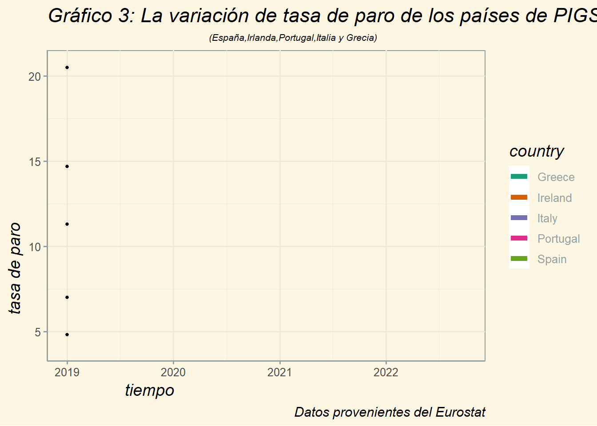
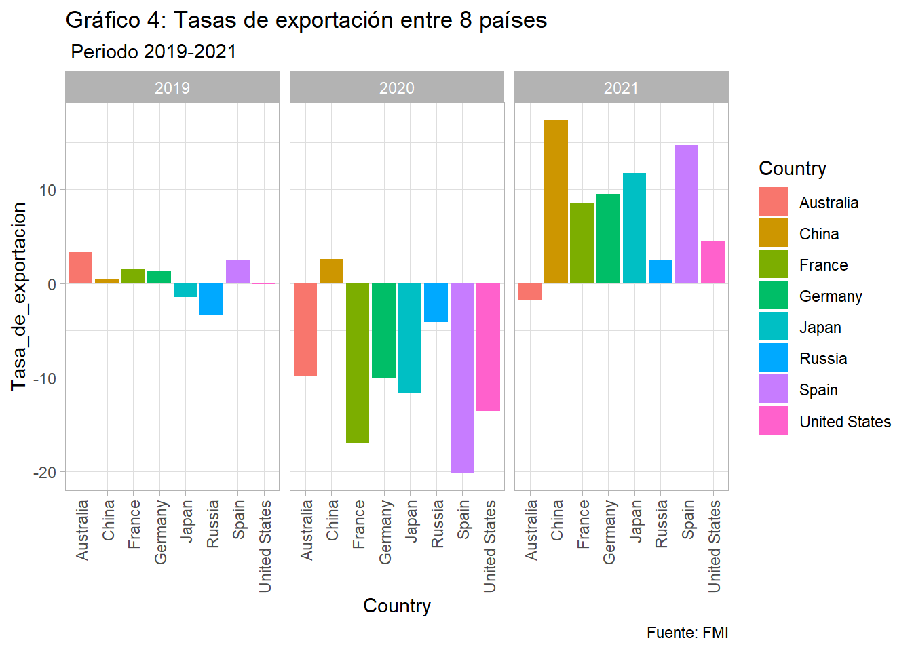
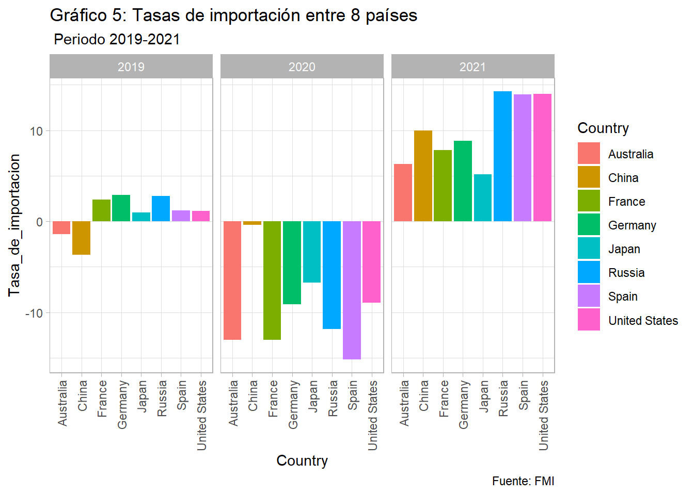
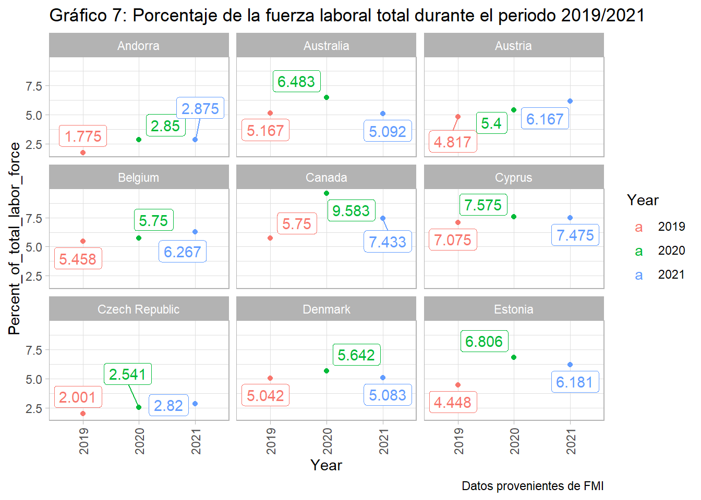
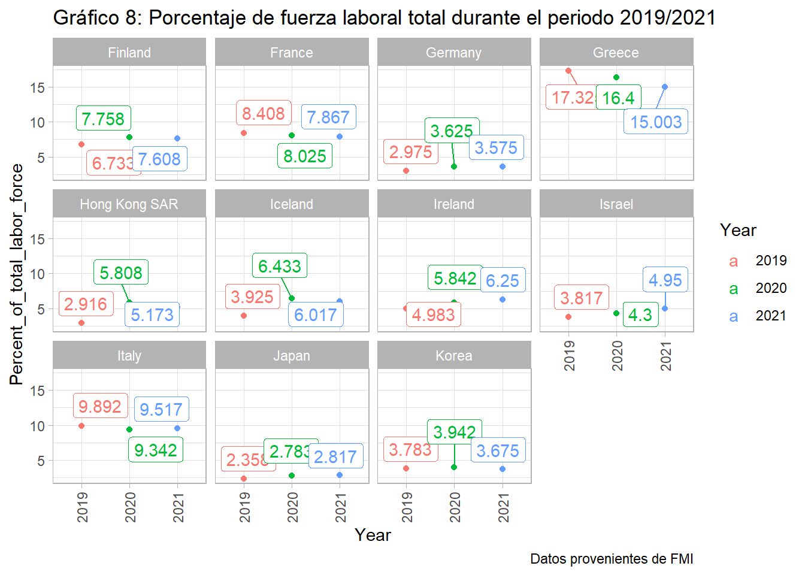
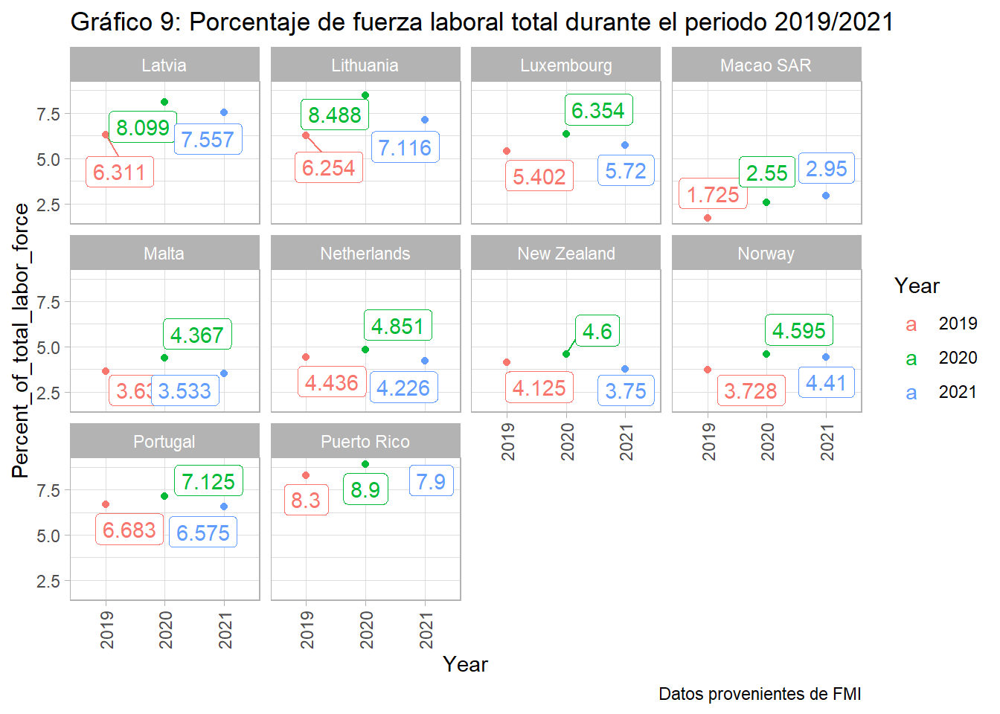
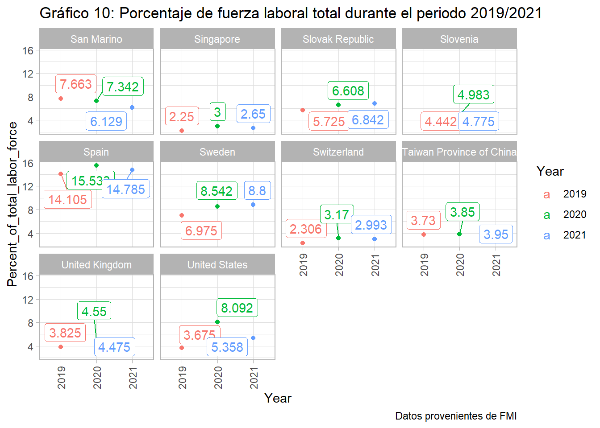
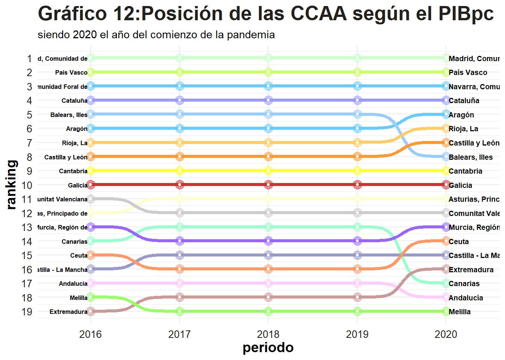
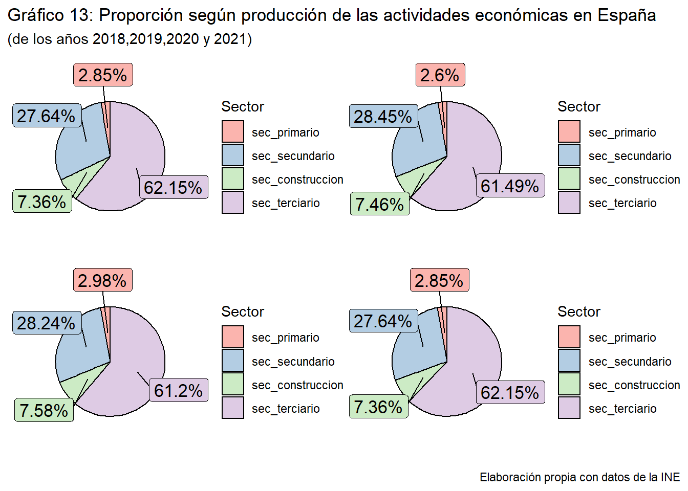

Estudiando las consecuencias que ha causado la crisis sobre el contexto mundial, europeo y español
trabajo BigData equipo
Autores/as
Yi Zhang(yiz3@alumni.uv.es)
Raphaëlle Bastien(rapbas@alumni.uv.es)
Kaikai Qiu(kaiqiu@alumni.uv.es)
Fecha de publicación
23 de diciembre de 2022
1. INTRODUCCIÓN
El impacto económico de la pandemia de COVID-19 es una grave crisis mundial que inició a principios del año 2020, primeramente en China, y luego en todo el mundo. Diferente a las crisis anteriores, esta ha sido causada principalmente por la expansión de la enfermedad COVID-19.
Dicho lo anterior, nuestro objetivo del trabajo es estudiar las consecuencias económicas que ha causado la crisis sobre distintos entornos:
Primero, haremos un análisis con variables macroeconómicos sobre los países de Europa, así observamos cómo de diferentes se han comportado y las similitudes que hay entre ellos
Seguidamente, el estudio se amplía hacia todos los países del mundo. En este caso, podemos ver las similitudes y las diferencias no solo entre cada país, también entre cada continente. Además,
Finalmente, nos enfocaremos en los impactos causados dentro de España🤩. Analizaremos los efectos para cada Comunidad y ciudad autónoma, los efectos dentro de cada sector de actividad, y cómo ha quedado el turismo en la Comunidad Valenciana.
Adicionalmente, hemos añadido un apartado que se trata sobre la actual crisis energética. Ofreceremos alguna información de lo que está pasando ahora y las medidas que se pretenden tomar las autoridades estatales.
“Hi ha una coalició d’interessos per a l’acceleració de les energies renovables. L’objectiu és que els 64 expedients pendents estén resolts abans del 25 de gener. Es disposarà del personal i mitjans necessaris” @ximopuig
Hemos utilizado varias fuentes para buscar datos: los datos de España provienen del INE; los datos de Europa provienen de eurostat y los datos internacionales provienen de FMI.
En este primer apartado, utilizaremos los 3 indicadores principales macroeconómicos para comparar el impacto económico del covid en países distintos de Europa. Son la variación del PIB per capita, la tasa de inflación y la tasa de desempleo. Comenzando por el análisis de la variación del PIBpc.
3.1. PIBpc
En principio, hay una grande divergencia entre la variación de PIB. Los datos está en el territorio de cada uno. Clasificamos los países en 4 catergorías según la variación y hacemos un comentario sobre cada categoría: de mejor a peor son: “menos mal”, “malo”, “muy malo” y “horroroso”. Y como el estereotipo, la economía de los países del norte es en general mejor que la de los países del sur. La única diferencia es que las economías y los ingresos de los países del este de Europa se verán menos afectados que los del oeste. (Nuestra Españita, por supuesto, está “horroroso”)
Código
mapdata <-full_join(geometrias,zz3)mapdata$my_comentario <-factor(mapdata$my_comentario, levels =c("menos mal", "malo", "muy malo","horroroso"))europe_points <-st_centroid(mapdata, of_largest_polygon =TRUE)europe_points <-cbind(mapdata, st_coordinates(st_centroid(mapdata$geometry, of_largest_polygon =TRUE)))p<-ggplot(mapdata)+geom_sf(aes(fill=my_comentario,geometry= geometry),size=.2)+geom_text(data = europe_points, aes(x = X, y = Y,label = porcentaje), color ="black", fontface ="bold", check_overlap =TRUE, size =1.8)+labs(title ="Gráfico 1:Mi comentario sobre el la economía europea",subtitle ="(basado en la variación de PIB per capital entre 2019 y 2020)",caption ="Caída media de EU27:5.74%")+theme_light()+theme(title=element_text(family="myFont",size=12,color="red",face="italic",hjust=0.2,lineheight=0.2),plot.subtitle=element_text(family="myFont",size=8,color="red",face="italic",hjust=0.6,lineheight=0.2),axis.title.x=element_text(size=10,face="bold",color="blue",hjust=0.5),axis.title.y=element_text(size=14,color="blue",hjust=0.5),legend.title=element_text(size=14,color="black",hjust=0.5)) +coord_sf(xlim=c(-30,45),ylim =c(25,72))p

3.2. Inflación
El segundo indicador, la tasa de inflación, también experimenta un gran incremento durante 2018 y 2022, debido a la interrupción de la cadena de suministro. Además, en el principio del 2022, a causa del comienzo de la guerra en Ucrania, ha resultado un nuevo aumento de esta.
La interrupción de la producción por el confinamiento a principios del 2020, ha provocado que miles de personas pierdan sus trabajos; como se refleja en el siguiente gráfico, el número exacto cambia cada mes:
En este subapartado, nos enfocaremos en los PIGS. PIGS es un acrónimo peyorativo en inglés con el que medios financieros anglosajones y del norte de Europa se refieren en ocasiones al grupo de cuatro países del sur de Europa conformado por Portugal, Italia, Grecia y España. A pesar de todo, como se ve en los gráficos anteriores, la economía irlandesa comporta de forma distinta al resto. De este modo, realizaremos una compración con los datos de los PIGS con Irlanda.
Código
dfparopigs <- dfparo2 %>%filter(country %in%c("Spain","Italy","Portugal","Ireland","Greece"))ggplot(data= dfparopigs, aes(x=fecha, y=tasa_de_paro, group = country)) +geom_line(aes(color = country), linetype="solid",size =2) +geom_point(size=1) +transition_reveal(fecha) +labs(title ="Gráfico 3: La variación de tasa de paro de los países de PIGS",subtitle ="(España,Irlanda,Portugal,Italia y Grecia)",caption ="Datos provenientes del Eurostat",x ="tiempo",y =" tasa de paro ") +theme_solarized()+theme(title=element_text(family="myFont",size=14,color="black",face="italic",hjust=0.2,lineheight=0.8),plot.subtitle=element_text(family="myFont",size=8,color="black",face="italic",hjust=0.6,lineheight=0.2))+scale_color_brewer(palette ="Dark2")

4. A NIVEL INTERNACIONAL
A continuación, vamos a hacer un estudio de las consecuencias económicas que ha provocado la crisis de la pandemia sobre el mundo.
4.1. Importación y exportación entre países elegidos
En primer lugar, hemos escogido 8 países del mundo al azar: Australia, China, Francia, Alemania, Japón, Rúsia, España y Estados Unidos. Nuestra intención es comparar tanto la evolución de las tasas de exportaciones e importaciones para cada país durante la época de la pandemia, y además una comparación entre ellos.
Comenzando por las exportaciones, nos encontramos que:
Australia: en el 2019 tiene tasa de exportación positiva, pero en el 2020 ha sufrido una caída brusca, aunque en el 2021 ha mejorado comparado con el año anterior, sigue teniendo una tasa negativa.
China: su exportación ha ido creciendo desde el 2019 al 2021, en el último ha experimentado un incremento disparado.
Tanto Francia, Alemania, España y Estados Unidos han evolucionado de forma similar, en el 2019 tienen tasas positivas, caídas durante el 2020 y en el 2021 han recuperado y han mejorado comparado con el 2019.
Las tendencias de Japón y Rúsia son similares: son los dos únicos países que antes y durante la pandemia generaban tasas de exportación negativas, y que luego consiguen expandir sus tasas en el 2021.
Destacamos que, siendo Australia el único país que aún no ha recuperado su tasa de exportación a posteriori, pero los demás países han ido recuperado y mejorado, y como caso particular, China ha sido el único país beneficiado en su tasa de exportación por la pandemia.
Código
#exportacionp1 <-ggplot(df_export, aes(x=Country, y= Tasa_de_exportacion, fill= Country)) +labs(title ="Gráfico 4: Tasas de exportación entre 8 países" ,subtitle =" Periodo 2019-2021",caption ="Fuente: FMI") +facet_grid(cols =vars (Year))+geom_bar(stat ="identity")+theme_light()+theme(axis.text.x =element_text(angle =90,hjust =1,vjust =0.5))p1

En las importaciones, nos encontramos situaciones parecidas:
Australia y China son los dos países que en 2019 tienen tasas de importaciones negativas, pero no elevadas. En el 2020, aunque siguen teniendo tasas inferiores, pero China mejora su tasa y Australaia empeora. Luego en el 2021 los dos consiguen tasas positivas.
Y los 6 demás países siguen una tendencia de +,-,+.
Código
p2 <-ggplot(df_import, aes(x= Country,y= Tasa_de_importacion, fill= Country)) +labs(title ="Gráfico 5: Tasas de importación entre 8 países", subtitle =" Periodo 2019-2021",caption ="Fuente: FMI")+facet_grid(cols =vars (Year))+geom_bar(stat ="identity")+theme_light()+theme (axis.text.x =element_text(angle =90,hjust =1,vjust =0.5))p2

4.2. Evolución del PIB de los 10 países escogidos durante 2019-2021
En segundo lugar, nos encontramos una comparación de la evolución del PIB de los siguientes países: Australia, Dinamarca, Islanda, Irlanda, Luxemburgo, Macao, Noruega, Qatar, Singapur, Suiza y Estados Unidos.
Países con movimiento creciente, es decir, el PIB ha ido creciendo de período a período. Son Dinamarca, Irlanda, Luxemburgo y Suiza.
Países con decrecimiento en 2020 y expansión en 2021 son Islanda, Noruega, Qatar, Singapur y Estados Unidos.
Australia y Macao no tienen datos completos.
En todo caso, ninguno de los 10 países ha tenido grandes fluctuaciones.
Código
df_2 <-full_join(df_2019, df_2020)df_2 <-full_join(df_2 , df_2021)p4 <-ggplot(df_2, aes(Year, Value, color = Country)) +geom_point(aes(Year, Value, color = Country)) +labs(title ="Gráfico 6: Evolución del PIB de los 10 países escogidos ",subtitle ="Periodo:2019-2021",caption ="Fuente: FMI",x ="Year",y ="PIB per capita",color ="Country")+facet_grid(cols =vars (Country))+theme_light() +theme (axis.text.x =element_text(angle =90,hjust =1,vjust =0.5))ggplotly(p4)
4.3. Consecuencias sobre el empleo de las economías avanzadas por la crisis
Por último, hemos utilizado la fuerza laboral como variable para explicar el impacto de la crisis sobre el ámbito laboral de las 40 economías avanzadas.
Tasa_de_desempleo_1 <-Tasa_de_desempleo %>%slice(1:27)p4 <-ggplot(Tasa_de_desempleo_1, aes(Year, Percent_of_total_labor_force, label = Percent_of_total_labor_force, color= Year)) +geom_point() +labs(title ="Gráfico 7: Porcentaje de la fuerza laboral total durante el periodo 2019/2021 " ,caption ="Datos provenientes de FMI",y ="Percent_of_total_labor_force",x ="Year") +geom_smooth() +facet_wrap(vars(Country))+geom_label_repel()+theme_light()+theme (axis.text.x =element_text(angle =90,hjust =1,vjust =0.5))p4

Código
Tasa_de_desempleo_2 <- Tasa_de_desempleo %>%slice(28:60)p5 <-ggplot(Tasa_de_desempleo_2, aes(Year, Percent_of_total_labor_force, label = Percent_of_total_labor_force, color= Year)) +geom_point() +labs(title ="Gráfico 8: Porcentaje de fuerza laboral total durante el periodo 2019/2021 " ,caption ="Datos provenientes de FMI",y ="Percent_of_total_labor_force",x ="Year") +geom_smooth() +facet_wrap(vars(Country))+geom_label_repel()+theme_light()+theme (axis.text.x =element_text(angle =90,hjust =1,vjust =0.5))p5

Código
Tasa_de_desempleo_3 <- Tasa_de_desempleo %>%slice(61:90)p6 <-ggplot(Tasa_de_desempleo_3, aes(Year, Percent_of_total_labor_force, label = Percent_of_total_labor_force, color= Year)) +geom_point() +labs(title ="Gráfico 9: Porcentaje de fuerza laboral total durante el periodo 2019/2021 " ,caption ="Datos provenientes de FMI",y ="Percent_of_total_labor_force",x ="Year") +geom_smooth() +facet_wrap(vars(Country))+geom_label_repel()+theme_light()+theme (axis.text.x =element_text(angle =90,hjust =1,vjust =0.5))p6

Código
Tasa_de_desempleo_4 <- Tasa_de_desempleo %>%slice(91:120)p7 <-ggplot(Tasa_de_desempleo_4, aes(Year, Percent_of_total_labor_force, label = Percent_of_total_labor_force, color= Year)) +geom_point() +labs(title ="Gráfico 10: Porcentaje de fuerza laboral total durante el periodo 2019/2021 " ,caption ="Datos provenientes de FMI",y ="Percent_of_total_labor_force",x ="Year") +geom_smooth() +facet_wrap(vars(Country))+geom_label_repel()+theme_light()+theme (axis.text.x =element_text(angle =90,hjust =1,vjust =0.5))p7

5. EFECTOS SOBRE LA ECONOMÍA ESPAÑOLA
Una vez analizado el entorno europeo y entorno internacional, es este apartado nos enfocaremos en el contexto español.
5.1. Evolución de la tasa de paro
Código
mapa <-read_sf("https://raw.githubusercontent.com/R-CoderDotCom/data/main/shapefile_spain/spain.geojson")df_ok <-left_join(df_original, mapa, by =c("ine_ccaa"="ccaa_id")) %>%select(-c(name, unemp_rate))p <-ggplot() +geom_sf(data = df_ok, aes(geometry = geometry, fill = tasa_paro), color ="white", size =0.09) +coord_sf(xlim =c(-10.00, 5.00), ylim =c(35, NA), expand =TRUE) +scale_fill_continuous(low="white",high="darkred") +theme_minimal() +theme(panel.grid.major =element_blank(), panel.grid.minor =element_blank()) +theme(axis.title.x=element_blank(),axis.text.x=element_blank(),axis.ticks.x=element_blank(),axis.title.y=element_blank(),axis.text.y=element_blank(),axis.ticks.y=element_blank()) +labs(title ="Evolucíon de la tasa de paro en España") +transition_time(fecha) +labs(title ='Fecha: {frame_time}')
Gráfico 11: Evolución de la tasa de paro en España
Podemos ver cómo ha ido evolucionando la tasa de paro en las regiones de España desde el 2019 hasta el 2022. Teniendo en cuenta que el año 2020 es el periodo donde más ha crecido la tasa de paro, especialmente a partir del segundo trimestre del año. Como conocemos, es cuando empieza la época del confinamiento. La situación mejora a partir del 2021, gracias a la recuperación económica.
5.2. Ranking de las CCAA según el PIBpc
En primer lugar, vamos a mostrar el ranking de las CCAA de acuerdo con el PIBpc de cada región desde el 2016 al 2020. De esta forma, podemos observar qué regiones han sido afectadas por el covid-19 en el 2020.
Código
df_ok <-bind_cols(df_1_pib,df_2_demo)df_ok <- df_ok %>%select("periodo"="periodo...1", "ccaa", "pib", "pob") %>%mutate(pib_pc = (pib*1000)/pob) %>%group_by(periodo) %>% dplyr::arrange(periodo, desc(pib_pc), ccaa) %>% dplyr::mutate(ranking = dplyr::row_number(),year =as.numeric(periodo))p <-ggplot(data = df_ok, aes(x = periodo, y = ranking, group = ccaa, color = ccaa)) +geom_bump(size =1.5) +geom_point(aes(color = ccaa, alpha =1), size =4) +geom_point(color ="#FFFFFF", size =1) +geom_text(data = df_ok %>%filter(year =="2016"),aes(label = ccaa, x = .963) , hjust =1, fontface ="bold", color ="black", size =2.3) +geom_text(data = df_ok %>%filter(year =="2020"),aes(label = ccaa, x =5.03) , hjust =0, fontface ="bold", color ="black", size =2.5) +scale_y_reverse(breaks =1:nrow(df_ok)) +theme(plot.margin =unit(c(0.35, 0.2, 0.3, 0.35), "cm")) +theme_minimal() +scale_color_manual(values =c("#FFCCFF","#66CCFF","#FFFFCC","#99CCFF","#99FFCC","#FFFF33","#FF9933","#9999CC","#9999FF","#CCCCCC","#CC9999","#CC3333","#CCFFCC","#9966FF","#66CCFF","#CCFF66","#FFCC66","#FF9966","#99FF66")) +labs(title ="Gráfico 12:Posición de las CCAA según el PIBpc",subtitle ="siendo 2020 el año del comienzo de la pandemia") +theme(plot.title =element_text(color="#22211d", size=20, face ="bold")) +theme(axis.title.x =element_text(size=14, color="black", face ="bold")) +theme(axis.title.y =element_text(size=14, color="black", face ="bold", vjust=1.25)) +theme(axis.text.x =element_text(size=10, vjust=0.5, hjust=0.5, color ="#22211d")) +theme(axis.text.y =element_text(size=10, color ="#22211d")) +theme(strip.text =element_text(face ="bold")) +theme(legend.position ="none")p

Obviamente, del 2019 al 2020 es el período que más cambios de posiciones ha generado, y es el periodo que nos interesa más.
Si nos fijamos, las 4 mejores regiones no han experimentado cambios desde el 2016, siguen siendo Comunidad de Madrid, País Vasco, Comunidad Floral de Navarra y Cataluña.
Las comunidades autónomas que siguen en el mismo puesto del 2019 al 2020 son los cuatro primeros que hemos mencionado anteriormente, sumando a Cantabria, Galícia, Principado de Astúrias, Comunidad Valenciana, Catilla-la Mancha y Melilla.
Las regiones que han mejorado en un posición del 2019 al 2020 son Aragón, La Rioja, Castilla y León, Región de Múrcia, Ceuta y Extremadura.
Por último, Islas Baleares, Canarias y Andalúcia han empeorado su puesto respecto a otras comunidades. - - -
No obstante, el ranking anterior no contiene datos significativos, ya que utiliza valores absolutos en lugar de tasas de variaciones relativos. En este caso, observamos que sorprendentemente, si calculamos la tasa de crecimiento del PIB del 2020 respecto al 2019, aunque en el 2020 todas las tasas son negativas, pero las regiones menos afectadas no son las mismas que las anteriores.
Código
df_1 <- df_px_1 %>%select("periodo","ccaa"="Comunidades.y.ciudades.autónomas","pib"="value") %>%filter(ccaa !="TOTAL NACIONAL") %>%filter(periodo %in%c("2018","2019","2020"))df_2 <- df_px_3 %>%select("periodo","ccaa"="Comunidades.y.ciudades.autónomas","pib_en_tasas"="value") %>%filter(ccaa !="TOTAL NACIONAL") %>%filter(periodo %in%c("2018","2019","2020"))aa <-full_join(df_1,df_2) %>%mutate(pib =as.numeric(pib)) %>%mutate(pib_en_tasas =as.numeric(pib_en_tasas))ranking_en_tasas <- aa %>%select(-c("pib")) %>%pivot_wider(names_from = periodo, values_from = pib_en_tasas) %>%select("ccaa","2020") %>% dplyr::arrange(desc(`2020`))tabla_tasas <- ranking_en_tasas %>%gt(rowname_col ="ccaa")%>%tab_header(title ="Tabla 2: Ranking según tasas de variaciones de crecimiento del PIB ",subtitle =md("(**de las CCAA**) de mayor a menor")) %>%tab_source_note(md("Fuente: datos de [INE](https://www.ine.es/jaxi/Datos.htm?path=/t35/p010/rev19/l0/&file=01001.px)")) %>%cols_align(align ="center") %>%opt_row_striping() %>%opt_table_font(font =google_font("Fira Mono")) %>%tab_options(column_labels.border.bottom.color ="black",table_body.border.bottom.color ="black",table_body.hlines.color ="black") %>%opt_align_table_header(align ="left") %>%data_color(columns =c(`2020`),colors = scales::col_numeric(palette =c("lightblue"), domain =NULL,alpha = .5) )tabla_tasas %>% gtExtras::gt_theme_guardian()
Tabla 2: Ranking según tasas de variaciones de crecimiento del PIB
Al parecer, Extremadura es la comunidad menos afectada e Islas Baleares la más perjudicada entre todas. Sin embargo, las cuatro regiones que parecían no ser afectadas, Madrid y País Vasco están entre las peores tasas de crecimiento.
5.3. ¿Cómo ha afectado a los sectores económicos?
En este apartado, analizaremos las consecuencias económicas en términos de producción sobre cada sector económico:
Código
df_px <- pxR::read.px("./datos/ramas_act.px") %>%as.data.frame()# ramas de actividad: grafico de barras horizontales animado con plotly df_ramas_original <- df_px %>%select("periodo"="Periodo", "ramas_act"="Ramas.de.actividad", "produccion"="value") %>%mutate(ramas_act =as.character(ramas_act)) %>%mutate(ramas_act =ifelse(ramas_act =="Total CNAE",paste("Z", ramas_act), ramas_act)) %>% tidyr::separate(ramas_act, sep =" ", into =c("ramas_act_code", "ramas_act"), extra ="merge") %>%select(-ramas_act_code)df_sec <- df_ramas_original %>%pivot_wider(names_from = ramas_act, values_from = produccion) %>%mutate(sec_primario =`Agricultura, ganadería, silvicultura y pesca`) %>%mutate(sec_secundario =`Industrias extractivas`+`Industria manufacturera`+`Suministro de energía eléctrica, gas, vapor y aire acondicionado`+`Suministro de agua, actividades de saneamiento, gestión de residuos y descontaminación`) %>%mutate(sec_construccion =`Construcción`) %>%mutate(sec_terciario =`Total CNAE`-`sec_primario`-`sec_secundario`-`sec_construccion`) %>%select("periodo", "total"="Total CNAE", "sec_primario", "sec_secundario", "sec_construccion", "sec_terciario") %>%pivot_longer(cols =2:6, names_to ="sectores", values_to ="produccion") df_2019 <- df_sec %>%filter(periodo =="2019") %>%filter(sectores !="total") %>%mutate(porcentaje = (produccion*100)/sum(produccion),percent =round(porcentaje, 2),csum =rev(cumsum(rev(percent))),posicion = percent/2+lead(csum, 1))df_2019 <- df_2019 %>%mutate(posicion =ifelse(is.na(posicion), percent/2, posicion))p_2019 <-ggplot(df_2019, aes(x ="" , y = percent, fill =fct_inorder(sectores))) +geom_col(width =1, color =1) +coord_polar(theta ="y") +scale_fill_brewer(palette ="Pastel1") +geom_label_repel(data = df_2019,aes(y = posicion, label =paste0(percent, "%")),size =4.5, nudge_x =1, show.legend =FALSE) +guides(fill =guide_legend(title ="Sector")) +theme_void() df_2020 <- df_sec %>%filter(periodo =="2020") %>%filter(sectores !="total") %>%mutate(porcentaje = (produccion*100)/sum(produccion),percent =round(porcentaje, 2),csum =rev(cumsum(rev(percent))),posicion = percent/2+lead(csum, 1))df_2020 <- df_2020 %>%mutate(posicion =ifelse(is.na(posicion), percent/2, posicion))p_2020 <-ggplot(df_2020, aes(x ="" , y = percent, fill =fct_inorder(sectores))) +geom_col(width =1, color =1) +coord_polar(theta ="y") +scale_fill_brewer(palette ="Pastel1") +geom_label_repel(data = df_2020,aes(y = posicion, label =paste0(percent, "%")),size =4.5, nudge_x =1, show.legend =FALSE) +guides(fill =guide_legend(title ="Sector")) +theme_void() df_2021 <- df_sec %>%filter(periodo =="2021") %>%filter(sectores !="total") %>%mutate(porcentaje = (produccion*100)/sum(produccion),percent =round(porcentaje, 2),csum =rev(cumsum(rev(percent))),posicion = percent/2+lead(csum, 1))df_2021 <- df_2021 %>%mutate(posicion =ifelse(is.na(posicion), percent/2, posicion))p_2021 <-ggplot(df_2021, aes(x ="" , y = percent, fill =fct_inorder(sectores))) +geom_col(width =1, color =1) +coord_polar(theta ="y") +scale_fill_brewer(palette ="Pastel1") +geom_label_repel(data = df_2021,aes(y = posicion, label =paste0(percent, "%")),size =4.5, nudge_x =1, show.legend =FALSE) +guides(fill =guide_legend(title ="Sector")) +theme_void() df_2018 <- df_sec %>%filter(periodo =="2018") %>%filter(sectores !="total") %>%mutate(porcentaje = (produccion*100)/sum(produccion),percent =round(porcentaje, 2),csum =rev(cumsum(rev(percent))),posicion = percent/2+lead(csum, 1))df_2018 <- df_2018 %>%mutate(posicion =ifelse(is.na(posicion), percent/2, posicion))p_2018 <-ggplot(df_2018, aes(x ="" , y = percent, fill =fct_inorder(sectores))) +geom_col(width =1, color =1) +coord_polar(theta ="y") +scale_fill_brewer(palette ="Pastel1") +geom_label_repel(data = df_2021,aes(y = posicion, label =paste0(percent, "%")),size =4.5, nudge_x =1, show.legend =FALSE) +guides(fill =guide_legend(title ="Sector")) +theme_void() wrap_plots(p_2018, p_2019, p_2020, p_2021, ncol =2, nrow =2,widths =c(1, 1), heights =c(1, 1)) +plot_annotation(title ="Gráfico 13: Proporción según producción de las actividades económicas en España",subtitle ="(de los años 2018,2019,2020 y 2021)",caption ="Elaboración propia con datos de la INE")

Observamos que, respecto a los diagramas sectoriales, las diferencias porcentuales entre los cuatro años no son grandes.
Sin embargo, un análisis más detallado dentro de los sectores, sí que existen diferencias en las producciones. En este caso, solo hemos cogido las ramas de actividad con 1 dígito mayores de 100.000 u.m.
Código
df_px <- pxR::read.px("./datos/ramas_act.px") %>%as.data.frame()# ramas de actividad: grafico de barras horizontales animado con plotly df_ramas_original <- df_px %>%select("periodo"="Periodo", "ramas_act"="Ramas.de.actividad", "produccion"="value")%>%mutate(ramas_act =as.character(ramas_act)) %>%mutate(ramas_act =ifelse(ramas_act =="Total CNAE",paste("Z", ramas_act), ramas_act)) %>% tidyr::separate(ramas_act, sep =" ", into =c("ramas_act_code", "ramas_act"), extra ="merge") %>%select(-ramas_act_code)df_ramas_mayor <- df_ramas_original %>%filter(ramas_act !="Total CNAE") %>%mutate(ramas_act = forcats::as_factor(ramas_act)) %>%mutate(ramas_act = forcats::fct_infreq(ramas_act)) %>%mutate(periodo =as.character(periodo)) %>%group_by(periodo) %>%arrange(periodo, desc(produccion), ramas_act) %>%mutate(periodo =as.factor(periodo)) %>%filter(produccion >=100000) %>%mutate(ramas_act =case_when( ramas_act =="Comercio al por mayor y al por menor; reparación de vehículos de motor y motocicletas"~"Comercio y reparación", ramas_act =="Actividades sanitarias y de servicios sociales"~"Act. sanitarias y de servicios sociales", ramas_act =="Actividades profesionales, científicas y técnicas"~"Act. profesionales,cientçificas y técnicas", ramas_act =="Industria manufacturera"~"Industria manufacturera", ramas_act =="Construcción"~"Construcción", ramas_act =="Actividades inmobiliarias"~"Actividades inmobiliarias", ramas_act =="Hostelería"~"Hostelería", ramas_act =="Transporte y almacenamiento"~"Transporte y almacenamiento"))p <-ggplot(df_ramas_mayor)p +geom_col(aes(x =reorder(ramas_act, produccion), y = produccion, fill = ramas_act)) +coord_flip() +transition_states(periodo, transition_length =1, state_length =1) +theme_minimal() +labs(title ="Gráfico 14: Producción en {closest_state}",subtitle ="diferenciado por ramas de actividad mayores de 100.000 u.m.",caption ="Elaboración propia con datos de la INE") +theme(plot.caption.position ="panel") +xlab('') +ylab('produccion') +theme(legend.position ="none")
En general, del 2019 al 2020, encontramos un descenso de producción muy evidente de todas las actividades:
La indústria manufacturera sigue ocupando el puesto de mayor producción, alcanza su máximo valor en el 2019, reduce su producción en el 2020, en el 2021 consigue incrementar pero sin alcanzar el valor del 2019.
Comercio y reparación, construcción y las actividades inmobiliarias siguen las mismas tendencias que la indústria manufacturera.
En hostelería hay un aspecto interesante, debido al covid, su producción cae profundamente sin llegar a 100.000.
Las actividades sanitarias y de servicios sociales es la única rama con distinta evolución, del 2018 al 2021 ha estado siempre creciendo.
Transporte y almacenamiento y actividades profesionales, científicas y técnicas tambíen se han observado reducciones, pero no son enormes.
5.4. Consecuencias sobre el turismo en la Comunidad Valenciana
Finalmente, acabamos la investigación en el territorio español con un análisis del sector turismo en la Comunidad Valenciana.
Código
df_px <- pxR::read.px("./datos/10823.px") %>% as.data.framedf <- df_px %>% janitor::clean_names() %>%mutate(fecha = lubridate::ym(periodo)) %>%mutate(anyo = lubridate::year(fecha)) %>%mutate(mes = lubridate::month(fecha)) %>%select(-periodo) %>%mutate(comunidades_autonomas =as.character(comunidades_autonomas),ccaa =ifelse(comunidades_autonomas =="Total",paste("00", comunidades_autonomas), comunidades_autonomas)) %>% tidyr::separate(ccaa, sep =" ", into =c("ine_ccaa", "ine_ccaa.n"), extra ="merge") %>%pivot_wider(names_from ="tipo_de_dato", values_from ="value") %>%select("fecha", "anyo", "mes", "ine_ccaa", "ine_ccaa.n", "Dato base", "Tasa de variación acumulada")zz <- naniar::gg_miss_var(df, show_pct =TRUE)df_original <- dfdf_CV <- df_original %>%filter(ine_ccaa.n =="Comunitat Valenciana")p1 <-ggplot() +geom_line(data = df_CV, aes(x = fecha,y =`Dato base`,color = ine_ccaa.n)) +theme_minimal() +labs(title ="Gráfico 15:Evolución de turistas siendo la Comunidad Valenciana el destino principal",subtitle ="(de enero 2019 hasta octubre 2022)",x ="",y ="Número de turistas") +theme(legend.position ="none")ggplotly(p1)
Código
p2 <-ggplot() +geom_line(data = df_CV, aes(x = fecha,y =`Tasa de variación acumulada`), color ="Blue") +theme_minimal() +labs(title ="Gráfico 16:Evolución de la tasa de variación acumulada siendo la Comunidad Valenciana el destino principal",x ="",y ="Tasa de variación acumulada") +theme(legend.position ="none")ggplotly(p2)
El primer gráfico nos muestra la evolución del número de turistas que provienen de otros sitios que eligen a la Comunidad Valenciana como destino de viaje. En el mes de agosto del 2019 consigue el mayor número de turistas. A partir de allí empieza a caer llegando al mínimo en abril y mayo del 2020, cuando empezó el confinamiento y el Estado de alarma. Podemos observar que, aunque el covid es el motivo principal de la caída del turismo, también hay otros factores que influyen a las fluctuaciones. Debido a que la Comunidad Valenciana está cerca del mar Mediterráneo y tiene un clima favorable, los viajeros comienzan a incrementar en temporadas de verano, y disminuyen en temporadas de invierno.
El segundo gráfico nos muestra lo mismo pero medido por la tasa de variación acumulada.
6. LA CRISIS ENERGÉTICA Y EL FUTURO
Terminamos nuestro trabajo con un apartado adicional sobre la crisis enérgetica actual que estamos viviendo ahora mismo. Dar un poco de información sobre adónde nos llevará esta crisis, y cómo puede ser nuestro furturo.
Del sector turismo: en la Comunidad Valenciana, la Generalitat plantea lanzar bonos turístimos para viajar en temporadas bajas, de esta forma conseguir incentivar el turismo. Para más información, aquí
En conclusión, R es un instrumento muy útil para elaborar gráficos, mapas y tablas. El trabajo ha empezado desde 0, tanto la búsqueda de datos, la transformación de datos a lo que llamamos “tidy”, y la realización final de los plots se ha basado principalmente a partir de RStudio. Además con la ayuda de, Quarto, sistema de publicación científica y técnica de código abierto, hemos conseguido presentar este trabajo de una forma más “cool”💻. Pero desde luego, hace falta un conocimiento previo, y pensamos que al finalizar este trabajo, hemos podido profundizar estos conocimientos. Aunque no podemos asegurarnos de que en el futuro nos va a servir R, pero sin duda, en el desarrollo del trabajo hemos aprendido cosas de programación.
8. REFERENCIAS
Para la realización de los gráficos y los comentarios pertinentes nos hemos basado en la información que vamos a exponer en los siguientes párrafos.
Para poder realizar los comentarios, nos hemos formado con artículos como los siguientes:
La economía europea durante la pandemia: nos hemos basado en los temarios de la asignatura Economía de la Unión Europea impartida por el Grado de Economía de la UV.
La economía mundial durante la pandemia: nos hemos basado en los temarios de la asignatura Economía internacional impartida por el Grado de Economía de la UV.
Para poder realizar gráficos animados, nos hemos basado en las explicaciones de como implementar el paquete gganimate en nuestro proyecto.
Con el paquete plotly, hemos conseguido realizar gráficos interactivos.
Para realizar el gráfico bump-chart nos hemos basado en el siguiente blog utilizando el paquete ggbump.
Además, para la elaboración de gráficos que nos parecían útiles para implementar en el trabajo, hemos consultado información sobre diferentes ejemplos de gráficos. La página lo podemos encontrar aquí
Por último, destacar como tambiém hemos consultado trabajos realizados por nuestros compañeros el año anterior. Estos últimos los podemos encontrar aquI
Con esto acabo mi trabajo para BigData!!🥳🎉👏👏
Abajo muestro mi entorno de trabajo y paquetes utilizados
---title: "ANÁLISIS ECONÓMICO SOBRE LA CRISIS DE LA PANDEMIA"description: | Estudiando las consecuencias que ha causado la crisis sobre el contexto mundial, europeo y españolauthor:- name: Yi Zhang(yiz3@alumni.uv.es)- name: Raphaëlle Bastien(rapbas@alumni.uv.es)- name: Kaikai Qiu(kaiqiu@alumni.uv.es)date: 2022-12-23categories: [trabajo BigData equipo]image: "./posts/imagenes/imagen_01.png"title-block-banner: true #- {true, false }toc: truetoc-location: lefttoc-depth: 3smooth-scroll: trueformat: html: mainfont: serif backgroundcolor: "#edf9fc" #embed-resources: true link-external-newwindow: true css: ./assets/my_css_file.css #- CUIDADO!!!!code-tools: truecode-link: true---## 1. INTRODUCCIÓNEl impacto económico de la pandemia de COVID-19 es una grave crisis mundial que inició a principios del año 2020, primeramente en China, y luego en todo el mundo. Diferente a las crisis anteriores, esta ha sido causada principalmente por la expansión de la enfermedad COVID-19.Dicho lo anterior, nuestro objetivo del trabajo es estudiar las consecuencias económicas que ha causado la crisis sobre distintos entornos:- Primero, haremos un análisis con variables macroeconómicos sobre los países de **Europa**, así observamos cómo de diferentes se han comportado y las similitudes que hay entre ellos- Seguidamente, el estudio se amplía hacia **todos los países del mundo**. En este caso, podemos ver las similitudes y las diferencias no solo entre cada país, también entre cada continente. Además, - Finalmente, nos enfocaremos en los impactos causados dentro de **España**🤩. Analizaremos los efectos para cada Comunidad y ciudad autónoma, los efectos dentro de cada sector de actividad, y cómo ha quedado el turismo en la Comunidad Valenciana.Adicionalmente, hemos añadido un apartado que se trata sobre la actual crisis energética. Ofreceremos alguna información de lo que está pasando ahora y las medidas que se pretenden tomar las autoridades estatales.> “Hi ha una coalició d’interessos per a l’acceleració de les energies renovables. L’objectiu és que els 64 expedients pendents estén resolts abans del 25 de gener. Es disposarà del personal i mitjans necessaris” @ximopuig- - -## 2. DATOS::: {.panel-tabset}### DATOSHemos utilizado varias fuentes para buscar datos: los datos de España provienen del [INE](https://www.ine.es/); los datos de Europa provienen de [eurostat](https://ec.europa.eu/eurostat) y los datos internacionales provienen de [FMI](https://www.imf.org/es/Home).- INE: [Tasa de paro](https://www.ine.es/jaxiT3/Datos.htm?t=4247), [PIB](https://www.ine.es/jaxi/Tabla.htm?path=/t35/p010/rev19/l0/&file=01001.px&L=0), [Ramas de actividad](https://www.ine.es/jaxiT3/Tabla.htm?t=32449), [Población](https://www.ine.es/jaxiT3/Tabla.htm?t=31304) y [Turismo](https://www.ine.es/jaxiT3/Tabla.htm?t=10823)- eurostat: [Real GDP per capita](https://ec.europa.eu/eurostat/web/products-datasets/-/sdg_08_10), [tasa de desempleo](https://ec.europa.eu/eurostat/web/main/search/-/search/estatsearchportlet_WAR_estatsearchportlet_INSTANCE_bHVzuvn1SZ8J?p_auth=S4Y1nqcx&text=ei_lmhr_m) y [inflation rate](https://ec.europa.eu/eurostat/web/products-datasets/-/tec00118)- FMI: [exportación](https://www.imf.org/en/Publications/WEO/weo-database/2022/October/weo-report?c=193,924,132,134,158,922,184,111,&s=TX_RPCH,&sy=2019&ey=2021&ssm=0&scsm=1&scc=0&ssd=1&ssc=0&sic=0&sort=country&ds=.&br=0), [importación](https://www.imf.org/en/Publications/WEO/weo-database/2022/October/weo-report?c=193,924,132,134,158,922,184,111,&s=TM_RPCH,&sy=2019&ey=2021&ssm=0&scsm=1&scc=0&ssd=1&ssc=0&sic=0&sort=country&ds=.&br=0), [PIB per capita current price](https://www.imf.org/en/Publications/WEO/weo-database/2022/October/weo-report?c=512,914,612,171,614,311,213,911,314,193,122,912,313,419,513,316,913,124,339,638,514,218,963,616,223,516,918,748,618,624,522,622,156,626,628,228,924,233,632,636,634,238,662,960,423,935,128,611,321,243,248,469,253,642,643,939,734,644,819,172,132,646,648,915,134,652,174,328,258,656,654,336,263,268,532,944,176,534,536,429,433,178,436,136,343,158,439,916,664,826,542,967,443,917,544,941,446,666,668,672,946,137,546,674,676,548,556,678,181,867,682,684,273,868,921,948,943,686,688,518,728,836,558,138,196,278,692,694,962,142,449,564,565,283,853,288,293,566,964,182,359,453,968,922,714,862,135,716,456,722,942,718,724,576,936,961,813,726,199,733,184,524,361,362,364,732,366,144,146,463,528,923,738,578,537,742,866,369,744,186,925,869,746,926,466,112,111,298,927,846,299,582,487,474,754,698,&s=NGDPDPC,&sy=2019&ey=2021&ssm=0&scsm=1&scc=0&ssd=1&ssc=0&sic=0&sort=country&ds=.&br=0) y [unployement rate](https://www.imf.org/en/Publications/WEO/weo-database/2022/October/weo-report?c=171,193,122,124,156,423,935,128,939,172,132,134,174,532,176,178,436,136,158,542,941,946,137,546,181,138,196,142,182,359,135,576,936,961,184,144,146,528,112,111,&s=LUR,&sy=2019&ey=2021&ssm=0&scsm=1&scc=0&ssd=1&ssc=0&sic=0&sort=country&ds=.&br=0)::: {layout-ncol=3}{#fig-3.1}{#fig-3.2}{#fig-3.3}:::### CÓDIGOS```{r}# Ejecutamos los paquetes utilizadoslibrary(tidyr)library(tidyverse)library(eurostat)library(ggplot2)library(plotly)library(gganimate)library(gt)library(ggthemes)library(readxl)library(gapminder)library(pxR)library(ggbump)library(plyr)library(sf)library(naniar)library(ggrepel)library(patchwork)library(vembedr)library(dplyr)library(conflicted)conflict_prefer("filter","dplyr")conflict_prefer("mutate","dplyr")conflict_prefer("rename","dplyr")conflict_prefer("arrange","dplyr")# Importación de datos#PIBpcEuropaoptions(scipen =999) #- para quitar la notación científicapacman::p_load(knitr, here, tidyverse, patchwork, ggrepel)pacman::p_load(sf, rnaturalearth, rnaturalearthdata, ggspatial, mapview, leafem, leaflet, tmap)aa <-search_eurostat("GDP per capita", type ="all")my_table <-"sdg_08_10"df <-get_eurostat(my_table, time_format ='raw', keepFlags =TRUE)zz <- df %>% dplyr::mutate(iso3c = countrycode::countrycode(geo, origin ="iso2c", destination ="iso3c"), .after = geo)#Inflacion Europabb <-search_eurostat("inflation", type ="all")my_table1 <-"tec00118"dfinflation <-get_eurostat(my_table1, time_format ='raw', keepFlags =TRUE)zzinflation <- dfinflation %>% dplyr::mutate(iso3c = countrycode::countrycode(geo, origin ="iso2c", destination ="iso3c"), .after = geo)#Tasa de paro Europacc <-search_eurostat("Unemployment", type ="all")ccc <-search_eurostat("unemployment", type ="all")my_table2 <-"ei_lmhr_m"dfparo <-get_eurostat(my_table2, time_format ='raw', keepFlags =TRUE)# PIGS# Importaciones y exportacionesdf_export <-read_excel("./datos/WEO_Data-4_export.xls", col_types =c("text", "numeric", "numeric"))df_export <- df_export %>% dplyr::rename(Tasa_de_exportacion = Value)df_import <-read_excel("./datos/WEO_Data-5_import.xls", col_types =c("text", "numeric", "numeric"))df_import <- df_import %>% dplyr::rename(Tasa_de_importacion = Value)# PIB internacionaldf_PIB <-read_excel("./datos/WEO_data-7.xls") df_PIB <- df_PIB %>% tidyr::pivot_longer(cols =2:4, names_to ="Year", values_to ="Value")df_1 <- df_PIB#Tasa de desempleo internacionalTasa_de_desempleo <-read_excel("./datos/Tasa_de_desempleo.xls", col_types =c("text", "text", "text", "numeric", "numeric", "numeric"))#Tasa de paro Españadf_px <- pxR::read.px("./datos/4247.px") %>% as.data.frame#PIBpc Españadf_px_1 <- pxR::read.px("./datos/pib_ccaa_valor.px") %>% as.data.framedf_px_2 <- pxR::read.px("./datos/demografia.px") %>% as.data.framedf_px_3<- pxR::read.px("./datos/pib_ccaa_tasas.px") %>% as.data.framedf_px_1 <- df_px_1 %>%mutate(periodo = stringr::str_extract(periodo, "...."))df_px_3 <- df_px_3 %>%mutate(periodo = stringr::str_extract(periodo, "...."))# Transformación de datos# PIBpcEuropazz1 <- zz %>%mutate(iso3c1 =ifelse(geo =="EL","GRC",iso3c)) %>%mutate(iso3c1 =ifelse(geo =="UK","GBR",iso3c)) %>%filter(unit =="CLV10_EUR_HAB") %>%mutate(nombre = countrycode::countrycode(iso3c1, origin ="iso3c", destination ="un.name.en"), .after = geo) zz2 <- zz1 %>%mutate(nombre =ifelse(geo =="EL","Greece",nombre)) %>%mutate(nombre =ifelse(geo =="UK","UK",nombre)) %>%filter(geo !="EA19") %>%filter(geo !="EU28") %>%filter(geo !="UK") %>%mutate(nombre =ifelse(geo =="EU27_2020","EU27_2020",nombre)) %>%select(3:4,7:8) %>%filter(time >=2019) %>% dplyr::rename(year=time) %>% dplyr::rename(PIB_per_capita=values) zz3 <- zz2 %>%pivot_wider(names_from ="year",values_from ="PIB_per_capita" )%>%drop_na() %>%rename(anyo2019 =3) %>%rename(anyo2020 =4) %>%rename(anyo2021 =5)%>%mutate(variacion_1920_por= (anyo2020-anyo2019)*100/anyo2019) %>%mutate(variacion_quan=cut_to_classes(variacion_1920_por,n=4,decimals =2,style ="quantile"))%>%mutate(variacion.f=as.factor(ntile(variacion_1920_por,4)))%>%mutate(my_comentario =case_when ( variacion.f =="4"~"menos mal", variacion.f =="3"~"malo", variacion.f =="2"~"muy malo", variacion.f =="1"~"horroroso",TRUE~"no lo sé"))zz3 <- zz3 %>%mutate(porcentaje =round(variacion_1920_por,digits =2) )geometrias <-get_eurostat_geospatial(resolution ="10",nuts_level ="0")# Inflación Europazzinflation1 <- zzinflation %>%mutate(iso3c1 =ifelse(geo =="EL","GRC",iso3c)) %>%mutate(iso3c1 =ifelse(geo =="UK","GBR",iso3c)) %>%mutate(nombre = countrycode::countrycode(iso3c1, origin ="iso3c", destination ="un.name.en"), .after = geo)#Tasa de paro Europadfparo1 <- dfparo %>%mutate(iso3c = countrycode::countrycode(geo, origin ="iso2c", destination ="iso3c"), .after = geo) %>%mutate(nombre = countrycode::countrycode(iso3c, origin ="iso3c", destination ="un.name.en"), .after = geo) %>%mutate(nombre =ifelse(geo =="EL","Greece",nombre)) %>%mutate(nombre =ifelse(geo =="EU27_2020","EU27_2020",nombre)) %>%mutate(nombre =ifelse(geo =="UK","UK",nombre)) %>%filter(geo !="EA19") %>%filter(geo !="US") %>% tidyr::separate(indic,sep ="-",c("nada1","nada2","sexo","edad"))%>%filter(s_adj=="NSA") %>%filter(sexo=="T") %>%filter(edad=="TOT") %>%select(7:9,11:12)#PIGS#PIB internacionaldf_2019<- df_1 %>%filter(Year ==2019) %>%slice_max(Value, n =10)df_2020 <- df_1 %>%filter(Year ==2020) %>%slice_max(Value, n =10)df_2021 <- df_1 %>%filter(Year ==2021) %>%slice_max(Value, n =10)#Tasa de desempleo internacionalTasa_de_desempleo <-Tasa_de_desempleo %>% tidyr::pivot_longer(cols =4:6, names_to ="Year", values_to ="Value")Tasa_de_desempleo <- Tasa_de_desempleo %>%rename(Percent_of_total_labor_force= Value)#Tasa de paro Españadf <- janitor::clean_names(df_px) df <- df %>%mutate(fecha = lubridate::yq(periodo)) %>%mutate(anyo = lubridate::year(fecha)) %>%mutate(trimestre = lubridate::quarter(fecha)) %>%select(-periodo)df <- df %>%mutate(comunidades_y_ciudades_autonomas =as.character(comunidades_y_ciudades_autonomas)) %>%mutate(comunidades_y_ciudades_autonomas =ifelse(comunidades_y_ciudades_autonomas =="Total Nacional",paste("00", comunidades_y_ciudades_autonomas), comunidades_y_ciudades_autonomas)) %>% tidyr::separate(comunidades_y_ciudades_autonomas, sep =" ", into =c("ine_ccaa", "ine_ccaa.n"), extra ="merge")df_original <- df %>%select("edad","sexo","fecha", "anyo", "trimestre", "ine_ccaa", "ine_ccaa.n", "tasa_paro"="value") %>%filter(ine_ccaa !="00") %>%filter(edad =="Total") %>%select(-c("edad","sexo","trimestre","anyo"))#PIBpc Españadf_1_pib <- df_px_1 %>%select("periodo","ccaa"="Comunidades.y.ciudades.autónomas","pib"="value") %>%filter(ccaa !="TOTAL NACIONAL")df_2_demo <- df_px_2 %>% janitor::clean_names() %>%select(-sexo) %>%filter(comunidades_y_ciudades_autonomas !="Total") %>%mutate(comunidades_y_ciudades_autonomas =as.character(comunidades_y_ciudades_autonomas)) %>% tidyr::separate(comunidades_y_ciudades_autonomas, sep =" ", into =c("ine_ccaa", "ine_ccaa.n"), extra ="merge") %>%select("periodo","ine_ccaa.n","pob"="value")```:::- - -## 3. CONTEXTO EUROPEOEn este primer apartado, utilizaremos los 3 indicadores principales macroeconómicos para comparar el impacto económico del covid en países distintos de Europa. Son la variación del PIB per capita, la tasa de inflación y la tasa de desempleo. Comenzando por el análisis de la variación del PIBpc.### 3.1. PIBpcEn principio, hay una grande divergencia entre la variación de PIB. Los datos está en el territorio de cada uno. Clasificamos los países en 4 catergorías según la variación y hacemos un comentario sobre cada categoría: de mejor a peor son: "menos mal", "malo", "muy malo" y "horroroso". Y como el estereotipo, la economía de los países del norte es en general mejor que la de los países del sur. La única diferencia es que las economías y los ingresos de los países del este de Europa se verán menos afectados que los del oeste. (~~Nuestra Españita, por supuesto, está "horroroso"~~)```{r}mapdata <-full_join(geometrias,zz3)mapdata$my_comentario <-factor(mapdata$my_comentario, levels =c("menos mal", "malo", "muy malo","horroroso"))europe_points <-st_centroid(mapdata, of_largest_polygon =TRUE)europe_points <-cbind(mapdata, st_coordinates(st_centroid(mapdata$geometry, of_largest_polygon =TRUE)))p<-ggplot(mapdata)+geom_sf(aes(fill=my_comentario,geometry= geometry),size=.2)+geom_text(data = europe_points, aes(x = X, y = Y,label = porcentaje), color ="black", fontface ="bold", check_overlap =TRUE, size =1.8)+labs(title ="Gráfico 1:Mi comentario sobre el la economía europea",subtitle ="(basado en la variación de PIB per capital entre 2019 y 2020)",caption ="Caída media de EU27:5.74%")+theme_light()+theme(title=element_text(family="myFont",size=12,color="red",face="italic",hjust=0.2,lineheight=0.2),plot.subtitle=element_text(family="myFont",size=8,color="red",face="italic",hjust=0.6,lineheight=0.2),axis.title.x=element_text(size=10,face="bold",color="blue",hjust=0.5),axis.title.y=element_text(size=14,color="blue",hjust=0.5),legend.title=element_text(size=14,color="black",hjust=0.5)) +coord_sf(xlim=c(-30,45),ylim =c(25,72))p```### 3.2. InflaciónEl segundo indicador, la tasa de inflación, también experimenta un gran incremento durante 2018 y 2022, debido a la interrupción de la cadena de suministro. Además, en el principio del 2022, a causa del comienzo de la guerra en Ucrania, ha resultado un nuevo aumento de esta.```{r}zzinflation2 <- zzinflation1 %>%mutate(nombre =ifelse(geo =="EL","Greece",nombre)) %>%mutate(nombre =ifelse(geo =="UK","UK",nombre)) %>%filter(geo !="EA19") %>%filter(geo !="EU28") %>%filter(geo !="EU") %>%filter(geo !="EA") %>%filter(geo !="EA18") %>%mutate(nombre =ifelse(geo =="EU27_2020","EU27_2020",nombre)) %>%select(3:4,7:8) %>%drop_na() %>%filter(time >=2018) %>%rename(year=time) %>%rename(tasa_de_inflacion=values) %>%filter(geo !="UK")DT::datatable(zzinflation2,caption ="Tabla 1:La tasa de inflación por cada país",options =list(columnDefs =list(list(className ='dt-center', targets =0:4)),pageLength=35)) ```### 3.3. Tasa de desempleoLa interrupción de la producción por el confinamiento a principios del 2020, ha provocado que miles de personas pierdan sus trabajos; como se refleja en el siguiente gráfico, el número exacto cambia cada mes:```{r}dfparo2 <- dfparo1 %>%mutate(fecha = lubridate::ym(time), .after = time)%>%mutate(anyo = lubridate::year(fecha), .after = fecha) %>%mutate(mes = lubridate::month(fecha), .after = anyo) %>%filter(anyo >=2019) %>%rename(country=nombre) %>%mutate(country.f = forcats::as_factor(country)) %>%mutate(country.ff = forcats::fct_reorder(country, values,.desc =TRUE))%>%group_by(time) %>%rename(pais= country.ff) %>%rename(tasa_de_paro= values)%>%filter(fecha !="2022-11-01") %>%filter(geo!="UK") %>%filter(geo!="TR") pparo <-ggplot(dfparo2,aes(x= country,y= tasa_de_paro,color = country,fill=country)) +geom_bar(stat='identity') +coord_flip() +geom_text(aes(label=tasa_de_paro), position =position_dodge2(width =0.9, preserve ='single'))pparo +transition_manual(fecha) +labs(title ="Gráfico 2:Tasa de paro en {current_frame}") +theme_minimal() +theme(legend.position ="none")```#### A. PIGSEn este subapartado, nos enfocaremos en los PIGS. PIGS es un acrónimo peyorativo en inglés con el que medios financieros anglosajones y del norte de Europa se refieren en ocasiones al grupo de cuatro países del sur de Europa conformado por Portugal, Italia, Grecia y España. A pesar de todo, como se ve en los gráficos anteriores, la economía irlandesa comporta de forma distinta al resto. De este modo, realizaremos una compración con los datos de los PIGS con Irlanda.```{r}dfparopigs <- dfparo2 %>%filter(country %in%c("Spain","Italy","Portugal","Ireland","Greece"))ggplot(data= dfparopigs, aes(x=fecha, y=tasa_de_paro, group = country)) +geom_line(aes(color = country), linetype="solid",size =2) +geom_point(size=1) +transition_reveal(fecha) +labs(title ="Gráfico 3: La variación de tasa de paro de los países de PIGS",subtitle ="(España,Irlanda,Portugal,Italia y Grecia)",caption ="Datos provenientes del Eurostat",x ="tiempo",y =" tasa de paro ") +theme_solarized()+theme(title=element_text(family="myFont",size=14,color="black",face="italic",hjust=0.2,lineheight=0.8),plot.subtitle=element_text(family="myFont",size=8,color="black",face="italic",hjust=0.6,lineheight=0.2))+scale_color_brewer(palette ="Dark2")```## 4. A NIVEL INTERNACIONALA continuación, vamos a hacer un estudio de las consecuencias económicas que ha provocado la crisis de la pandemia sobre el mundo.### 4.1. Importación y exportación entre países elegidosEn primer lugar, hemos escogido 8 países del mundo al azar: Australia, China, Francia, Alemania, Japón, Rúsia, España y Estados Unidos. Nuestra intención es comparar tanto la evolución de las tasas de exportaciones e importaciones para cada país durante la época de la pandemia, y además una comparación entre ellos.::: {.panel-tabset}### ExportaciónComenzando por las exportaciones, nos encontramos que:- Australia: en el 2019 tiene tasa de exportación positiva, pero en el 2020 ha sufrido una caída brusca, aunque en el 2021 ha mejorado comparado con el año anterior, sigue teniendo una tasa negativa.- China: su exportación ha ido creciendo desde el 2019 al 2021, en el último ha experimentado un incremento disparado.- Tanto Francia, Alemania, España y Estados Unidos han evolucionado de forma similar, en el 2019 tienen tasas positivas, caídas durante el 2020 y en el 2021 han recuperado y han mejorado comparado con el 2019.- Las tendencias de Japón y Rúsia son similares: son los dos únicos países que antes y durante la pandemia generaban tasas de exportación negativas, y que luego consiguen expandir sus tasas en el 2021.Destacamos que, siendo Australia el único país que aún no ha recuperado su tasa de exportación a posteriori, pero los demás países han ido recuperado y mejorado, y como caso particular, China ha sido el único país beneficiado en su tasa de exportación por la pandemia.```{r}#exportacionp1 <-ggplot(df_export, aes(x=Country, y= Tasa_de_exportacion, fill= Country)) +labs(title ="Gráfico 4: Tasas de exportación entre 8 países" ,subtitle =" Periodo 2019-2021",caption ="Fuente: FMI") +facet_grid(cols =vars (Year))+geom_bar(stat ="identity")+theme_light()+theme(axis.text.x =element_text(angle =90,hjust =1,vjust =0.5))p1```### ImportaciónEn las importaciones, nos encontramos situaciones parecidas:- Australia y China son los dos países que en 2019 tienen tasas de importaciones negativas, pero no elevadas. En el 2020, aunque siguen teniendo tasas inferiores, pero China mejora su tasa y Australaia empeora. Luego en el 2021 los dos consiguen tasas positivas.- Y los 6 demás países siguen una tendencia de +,-,+.```{r}p2 <-ggplot(df_import, aes(x= Country,y= Tasa_de_importacion, fill= Country)) +labs(title ="Gráfico 5: Tasas de importación entre 8 países", subtitle =" Periodo 2019-2021",caption ="Fuente: FMI")+facet_grid(cols =vars (Year))+geom_bar(stat ="identity")+theme_light()+theme (axis.text.x =element_text(angle =90,hjust =1,vjust =0.5))p2```:::### 4.2. Evolución del PIB de los 10 países escogidos durante 2019-2021En segundo lugar, nos encontramos una comparación de la evolución del PIB de los siguientes países: Australia, Dinamarca, Islanda, Irlanda, Luxemburgo, Macao, Noruega, Qatar, Singapur, Suiza y Estados Unidos.- Países con movimiento creciente, es decir, el PIB ha ido creciendo de período a período. Son Dinamarca, Irlanda, Luxemburgo y Suiza.- Países con decrecimiento en 2020 y expansión en 2021 son Islanda, Noruega, Qatar, Singapur y Estados Unidos.- Australia y Macao no tienen datos completos.En todo caso, ninguno de los 10 países ha tenido grandes fluctuaciones.```{r}df_2 <-full_join(df_2019, df_2020)df_2 <-full_join(df_2 , df_2021)p4 <-ggplot(df_2, aes(Year, Value, color = Country)) +geom_point(aes(Year, Value, color = Country)) +labs(title ="Gráfico 6: Evolución del PIB de los 10 países escogidos ",subtitle ="Periodo:2019-2021",caption ="Fuente: FMI",x ="Year",y ="PIB per capita",color ="Country")+facet_grid(cols =vars (Country))+theme_light() +theme (axis.text.x =element_text(angle =90,hjust =1,vjust =0.5))ggplotly(p4)```### 4.3. Consecuencias sobre el empleo de las economías avanzadas por la crisisPor último, hemos utilizado la fuerza laboral como variable para explicar el impacto de la crisis sobre el ámbito laboral de las 40 economías avanzadas.::: {.panel-tabset}### 1```{r}Tasa_de_desempleo_1 <-Tasa_de_desempleo %>%slice(1:27)p4 <-ggplot(Tasa_de_desempleo_1, aes(Year, Percent_of_total_labor_force, label = Percent_of_total_labor_force, color= Year)) +geom_point() +labs(title ="Gráfico 7: Porcentaje de la fuerza laboral total durante el periodo 2019/2021 " ,caption ="Datos provenientes de FMI",y ="Percent_of_total_labor_force",x ="Year") +geom_smooth() +facet_wrap(vars(Country))+geom_label_repel()+theme_light()+theme (axis.text.x =element_text(angle =90,hjust =1,vjust =0.5))p4```### 2```{r}Tasa_de_desempleo_2 <- Tasa_de_desempleo %>%slice(28:60)p5 <-ggplot(Tasa_de_desempleo_2, aes(Year, Percent_of_total_labor_force, label = Percent_of_total_labor_force, color= Year)) +geom_point() +labs(title ="Gráfico 8: Porcentaje de fuerza laboral total durante el periodo 2019/2021 " ,caption ="Datos provenientes de FMI",y ="Percent_of_total_labor_force",x ="Year") +geom_smooth() +facet_wrap(vars(Country))+geom_label_repel()+theme_light()+theme (axis.text.x =element_text(angle =90,hjust =1,vjust =0.5))p5```### 3```{r}Tasa_de_desempleo_3 <- Tasa_de_desempleo %>%slice(61:90)p6 <-ggplot(Tasa_de_desempleo_3, aes(Year, Percent_of_total_labor_force, label = Percent_of_total_labor_force, color= Year)) +geom_point() +labs(title ="Gráfico 9: Porcentaje de fuerza laboral total durante el periodo 2019/2021 " ,caption ="Datos provenientes de FMI",y ="Percent_of_total_labor_force",x ="Year") +geom_smooth() +facet_wrap(vars(Country))+geom_label_repel()+theme_light()+theme (axis.text.x =element_text(angle =90,hjust =1,vjust =0.5))p6```### 4```{r}Tasa_de_desempleo_4 <- Tasa_de_desempleo %>%slice(91:120)p7 <-ggplot(Tasa_de_desempleo_4, aes(Year, Percent_of_total_labor_force, label = Percent_of_total_labor_force, color= Year)) +geom_point() +labs(title ="Gráfico 10: Porcentaje de fuerza laboral total durante el periodo 2019/2021 " ,caption ="Datos provenientes de FMI",y ="Percent_of_total_labor_force",x ="Year") +geom_smooth() +facet_wrap(vars(Country))+geom_label_repel()+theme_light()+theme (axis.text.x =element_text(angle =90,hjust =1,vjust =0.5))p7```::: - - -## 5. EFECTOS SOBRE LA ECONOMÍA ESPAÑOLAUna vez analizado el entorno europeo y entorno internacional, es este apartado nos enfocaremos en el contexto español. ### 5.1. Evolución de la tasa de paro```{r}mapa <-read_sf("https://raw.githubusercontent.com/R-CoderDotCom/data/main/shapefile_spain/spain.geojson")df_ok <-left_join(df_original, mapa, by =c("ine_ccaa"="ccaa_id")) %>%select(-c(name, unemp_rate))p <-ggplot() +geom_sf(data = df_ok, aes(geometry = geometry, fill = tasa_paro), color ="white", size =0.09) +coord_sf(xlim =c(-10.00, 5.00), ylim =c(35, NA), expand =TRUE) +scale_fill_continuous(low="white",high="darkred") +theme_minimal() +theme(panel.grid.major =element_blank(), panel.grid.minor =element_blank()) +theme(axis.title.x=element_blank(),axis.text.x=element_blank(),axis.ticks.x=element_blank(),axis.title.y=element_blank(),axis.text.y=element_blank(),axis.ticks.y=element_blank()) +labs(title ="Evolucíon de la tasa de paro en España") +transition_time(fecha) +labs(title ='Fecha: {frame_time}')```Podemos ver cómo ha ido evolucionando la tasa de paro en las regiones de España desde el 2019 hasta el 2022. Teniendo en cuenta que el año 2020 es el periodo donde más ha crecido la tasa de paro, especialmente a partir del segundo trimestre del año. Como conocemos, es cuando empieza la época del confinamiento. La situación mejora a partir del 2021, gracias a la recuperación económica.### 5.2. Ranking de las CCAA según el PIBpcEn primer lugar, vamos a mostrar el ranking de las CCAA de acuerdo con el PIBpc de cada región desde el 2016 al 2020. De esta forma, podemos observar qué regiones han sido afectadas por el covid-19 en el 2020. ```{r}df_ok <-bind_cols(df_1_pib,df_2_demo)df_ok <- df_ok %>%select("periodo"="periodo...1", "ccaa", "pib", "pob") %>%mutate(pib_pc = (pib*1000)/pob) %>%group_by(periodo) %>% dplyr::arrange(periodo, desc(pib_pc), ccaa) %>% dplyr::mutate(ranking = dplyr::row_number(),year =as.numeric(periodo))p <-ggplot(data = df_ok, aes(x = periodo, y = ranking, group = ccaa, color = ccaa)) +geom_bump(size =1.5) +geom_point(aes(color = ccaa, alpha =1), size =4) +geom_point(color ="#FFFFFF", size =1) +geom_text(data = df_ok %>%filter(year =="2016"),aes(label = ccaa, x = .963) , hjust =1, fontface ="bold", color ="black", size =2.3) +geom_text(data = df_ok %>%filter(year =="2020"),aes(label = ccaa, x =5.03) , hjust =0, fontface ="bold", color ="black", size =2.5) +scale_y_reverse(breaks =1:nrow(df_ok)) +theme(plot.margin =unit(c(0.35, 0.2, 0.3, 0.35), "cm")) +theme_minimal() +scale_color_manual(values =c("#FFCCFF","#66CCFF","#FFFFCC","#99CCFF","#99FFCC","#FFFF33","#FF9933","#9999CC","#9999FF","#CCCCCC","#CC9999","#CC3333","#CCFFCC","#9966FF","#66CCFF","#CCFF66","#FFCC66","#FF9966","#99FF66")) +labs(title ="Gráfico 12:Posición de las CCAA según el PIBpc",subtitle ="siendo 2020 el año del comienzo de la pandemia") +theme(plot.title =element_text(color="#22211d", size=20, face ="bold")) +theme(axis.title.x =element_text(size=14, color="black", face ="bold")) +theme(axis.title.y =element_text(size=14, color="black", face ="bold", vjust=1.25)) +theme(axis.text.x =element_text(size=10, vjust=0.5, hjust=0.5, color ="#22211d")) +theme(axis.text.y =element_text(size=10, color ="#22211d")) +theme(strip.text =element_text(face ="bold")) +theme(legend.position ="none")p```Obviamente, del 2019 al 2020 es el período que más cambios de posiciones ha generado, y es el periodo que nos interesa más. - Si nos fijamos, las 4 mejores regiones no han experimentado cambios desde el 2016, siguen siendo Comunidad de Madrid, País Vasco, Comunidad Floral de Navarra y Cataluña. - Las comunidades autónomas que siguen en el mismo puesto del 2019 al 2020 son los cuatro primeros que hemos mencionado anteriormente, sumando a Cantabria, Galícia, Principado de Astúrias, Comunidad Valenciana, Catilla-la Mancha y Melilla. - Las regiones que han mejorado en un posición del 2019 al 2020 son Aragón, La Rioja, Castilla y León, Región de Múrcia, Ceuta y Extremadura.- Por último, Islas Baleares, Canarias y Andalúcia han empeorado su puesto respecto a otras comunidades.- - -No obstante, el ranking anterior no contiene datos significativos, ya que utiliza valores absolutos en lugar de tasas de variaciones relativos. En este caso, observamos que sorprendentemente, si calculamos la tasa de crecimiento del PIB del 2020 respecto al 2019, aunque en el 2020 todas las tasas son negativas, pero las regiones menos afectadas no son las mismas que las anteriores.```{r}df_1 <- df_px_1 %>%select("periodo","ccaa"="Comunidades.y.ciudades.autónomas","pib"="value") %>%filter(ccaa !="TOTAL NACIONAL") %>%filter(periodo %in%c("2018","2019","2020"))df_2 <- df_px_3 %>%select("periodo","ccaa"="Comunidades.y.ciudades.autónomas","pib_en_tasas"="value") %>%filter(ccaa !="TOTAL NACIONAL") %>%filter(periodo %in%c("2018","2019","2020"))aa <-full_join(df_1,df_2) %>%mutate(pib =as.numeric(pib)) %>%mutate(pib_en_tasas =as.numeric(pib_en_tasas))ranking_en_tasas <- aa %>%select(-c("pib")) %>%pivot_wider(names_from = periodo, values_from = pib_en_tasas) %>%select("ccaa","2020") %>% dplyr::arrange(desc(`2020`))tabla_tasas <- ranking_en_tasas %>%gt(rowname_col ="ccaa")%>%tab_header(title ="Tabla 2: Ranking según tasas de variaciones de crecimiento del PIB ",subtitle =md("(**de las CCAA**) de mayor a menor")) %>%tab_source_note(md("Fuente: datos de [INE](https://www.ine.es/jaxi/Datos.htm?path=/t35/p010/rev19/l0/&file=01001.px)")) %>%cols_align(align ="center") %>%opt_row_striping() %>%opt_table_font(font =google_font("Fira Mono")) %>%tab_options(column_labels.border.bottom.color ="black",table_body.border.bottom.color ="black",table_body.hlines.color ="black") %>%opt_align_table_header(align ="left") %>%data_color(columns =c(`2020`),colors = scales::col_numeric(palette =c("lightblue"), domain =NULL,alpha = .5) )tabla_tasas %>% gtExtras::gt_theme_guardian()```Al parecer, Extremadura es la comunidad menos afectada e Islas Baleares la más perjudicada entre todas. Sin embargo, las cuatro regiones que parecían no ser afectadas, Madrid y País Vasco están entre las peores tasas de crecimiento.### 5.3. ¿Cómo ha afectado a los sectores económicos?En este apartado, analizaremos las consecuencias económicas en términos de producción sobre cada sector económico:```{r}df_px <- pxR::read.px("./datos/ramas_act.px") %>%as.data.frame()# ramas de actividad: grafico de barras horizontales animado con plotly df_ramas_original <- df_px %>%select("periodo"="Periodo", "ramas_act"="Ramas.de.actividad", "produccion"="value") %>%mutate(ramas_act =as.character(ramas_act)) %>%mutate(ramas_act =ifelse(ramas_act =="Total CNAE",paste("Z", ramas_act), ramas_act)) %>% tidyr::separate(ramas_act, sep =" ", into =c("ramas_act_code", "ramas_act"), extra ="merge") %>%select(-ramas_act_code)df_sec <- df_ramas_original %>%pivot_wider(names_from = ramas_act, values_from = produccion) %>%mutate(sec_primario =`Agricultura, ganadería, silvicultura y pesca`) %>%mutate(sec_secundario =`Industrias extractivas`+`Industria manufacturera`+`Suministro de energía eléctrica, gas, vapor y aire acondicionado`+`Suministro de agua, actividades de saneamiento, gestión de residuos y descontaminación`) %>%mutate(sec_construccion =`Construcción`) %>%mutate(sec_terciario =`Total CNAE`-`sec_primario`-`sec_secundario`-`sec_construccion`) %>%select("periodo", "total"="Total CNAE", "sec_primario", "sec_secundario", "sec_construccion", "sec_terciario") %>%pivot_longer(cols =2:6, names_to ="sectores", values_to ="produccion") df_2019 <- df_sec %>%filter(periodo =="2019") %>%filter(sectores !="total") %>%mutate(porcentaje = (produccion*100)/sum(produccion),percent =round(porcentaje, 2),csum =rev(cumsum(rev(percent))),posicion = percent/2+lead(csum, 1))df_2019 <- df_2019 %>%mutate(posicion =ifelse(is.na(posicion), percent/2, posicion))p_2019 <-ggplot(df_2019, aes(x ="" , y = percent, fill =fct_inorder(sectores))) +geom_col(width =1, color =1) +coord_polar(theta ="y") +scale_fill_brewer(palette ="Pastel1") +geom_label_repel(data = df_2019,aes(y = posicion, label =paste0(percent, "%")),size =4.5, nudge_x =1, show.legend =FALSE) +guides(fill =guide_legend(title ="Sector")) +theme_void() df_2020 <- df_sec %>%filter(periodo =="2020") %>%filter(sectores !="total") %>%mutate(porcentaje = (produccion*100)/sum(produccion),percent =round(porcentaje, 2),csum =rev(cumsum(rev(percent))),posicion = percent/2+lead(csum, 1))df_2020 <- df_2020 %>%mutate(posicion =ifelse(is.na(posicion), percent/2, posicion))p_2020 <-ggplot(df_2020, aes(x ="" , y = percent, fill =fct_inorder(sectores))) +geom_col(width =1, color =1) +coord_polar(theta ="y") +scale_fill_brewer(palette ="Pastel1") +geom_label_repel(data = df_2020,aes(y = posicion, label =paste0(percent, "%")),size =4.5, nudge_x =1, show.legend =FALSE) +guides(fill =guide_legend(title ="Sector")) +theme_void() df_2021 <- df_sec %>%filter(periodo =="2021") %>%filter(sectores !="total") %>%mutate(porcentaje = (produccion*100)/sum(produccion),percent =round(porcentaje, 2),csum =rev(cumsum(rev(percent))),posicion = percent/2+lead(csum, 1))df_2021 <- df_2021 %>%mutate(posicion =ifelse(is.na(posicion), percent/2, posicion))p_2021 <-ggplot(df_2021, aes(x ="" , y = percent, fill =fct_inorder(sectores))) +geom_col(width =1, color =1) +coord_polar(theta ="y") +scale_fill_brewer(palette ="Pastel1") +geom_label_repel(data = df_2021,aes(y = posicion, label =paste0(percent, "%")),size =4.5, nudge_x =1, show.legend =FALSE) +guides(fill =guide_legend(title ="Sector")) +theme_void() df_2018 <- df_sec %>%filter(periodo =="2018") %>%filter(sectores !="total") %>%mutate(porcentaje = (produccion*100)/sum(produccion),percent =round(porcentaje, 2),csum =rev(cumsum(rev(percent))),posicion = percent/2+lead(csum, 1))df_2018 <- df_2018 %>%mutate(posicion =ifelse(is.na(posicion), percent/2, posicion))p_2018 <-ggplot(df_2018, aes(x ="" , y = percent, fill =fct_inorder(sectores))) +geom_col(width =1, color =1) +coord_polar(theta ="y") +scale_fill_brewer(palette ="Pastel1") +geom_label_repel(data = df_2021,aes(y = posicion, label =paste0(percent, "%")),size =4.5, nudge_x =1, show.legend =FALSE) +guides(fill =guide_legend(title ="Sector")) +theme_void() wrap_plots(p_2018, p_2019, p_2020, p_2021, ncol =2, nrow =2,widths =c(1, 1), heights =c(1, 1)) +plot_annotation(title ="Gráfico 13: Proporción según producción de las actividades económicas en España",subtitle ="(de los años 2018,2019,2020 y 2021)",caption ="Elaboración propia con datos de la INE")```Observamos que, respecto a los diagramas sectoriales, las diferencias porcentuales entre los cuatro años no son grandes. Sin embargo, un análisis más detallado dentro de los sectores, sí que existen diferencias en las producciones. En este caso, solo hemos cogido las ramas de actividad con 1 dígito mayores de 100.000 u.m.```{r}df_px <- pxR::read.px("./datos/ramas_act.px") %>%as.data.frame()# ramas de actividad: grafico de barras horizontales animado con plotly df_ramas_original <- df_px %>%select("periodo"="Periodo", "ramas_act"="Ramas.de.actividad", "produccion"="value")%>%mutate(ramas_act =as.character(ramas_act)) %>%mutate(ramas_act =ifelse(ramas_act =="Total CNAE",paste("Z", ramas_act), ramas_act)) %>% tidyr::separate(ramas_act, sep =" ", into =c("ramas_act_code", "ramas_act"), extra ="merge") %>%select(-ramas_act_code)df_ramas_mayor <- df_ramas_original %>%filter(ramas_act !="Total CNAE") %>%mutate(ramas_act = forcats::as_factor(ramas_act)) %>%mutate(ramas_act = forcats::fct_infreq(ramas_act)) %>%mutate(periodo =as.character(periodo)) %>%group_by(periodo) %>%arrange(periodo, desc(produccion), ramas_act) %>%mutate(periodo =as.factor(periodo)) %>%filter(produccion >=100000) %>%mutate(ramas_act =case_when( ramas_act =="Comercio al por mayor y al por menor; reparación de vehículos de motor y motocicletas"~"Comercio y reparación", ramas_act =="Actividades sanitarias y de servicios sociales"~"Act. sanitarias y de servicios sociales", ramas_act =="Actividades profesionales, científicas y técnicas"~"Act. profesionales,cientçificas y técnicas", ramas_act =="Industria manufacturera"~"Industria manufacturera", ramas_act =="Construcción"~"Construcción", ramas_act =="Actividades inmobiliarias"~"Actividades inmobiliarias", ramas_act =="Hostelería"~"Hostelería", ramas_act =="Transporte y almacenamiento"~"Transporte y almacenamiento"))p <-ggplot(df_ramas_mayor)p +geom_col(aes(x =reorder(ramas_act, produccion), y = produccion, fill = ramas_act)) +coord_flip() +transition_states(periodo, transition_length =1, state_length =1) +theme_minimal() +labs(title ="Gráfico 14: Producción en {closest_state}",subtitle ="diferenciado por ramas de actividad mayores de 100.000 u.m.",caption ="Elaboración propia con datos de la INE") +theme(plot.caption.position ="panel") +xlab('') +ylab('produccion') +theme(legend.position ="none")```En general, del 2019 al 2020, encontramos un descenso de producción muy evidente de todas las actividades:- La indústria manufacturera sigue ocupando el puesto de mayor producción, alcanza su máximo valor en el 2019, reduce su producción en el 2020, en el 2021 consigue incrementar pero sin alcanzar el valor del 2019.- Comercio y reparación, construcción y las actividades inmobiliarias siguen las mismas tendencias que la indústria manufacturera.- En hostelería hay un aspecto interesante, debido al covid, su producción cae profundamente sin llegar a 100.000.- Las actividades sanitarias y de servicios sociales es la única rama con distinta evolución, del 2018 al 2021 ha estado siempre creciendo.- Transporte y almacenamiento y actividades profesionales, científicas y técnicas tambíen se han observado reducciones, pero no son enormes.### 5.4. Consecuencias sobre el turismo en la Comunidad ValencianaFinalmente, acabamos la investigación en el territorio español con un análisis del sector turismo en la Comunidad Valenciana.```{r}df_px <- pxR::read.px("./datos/10823.px") %>% as.data.framedf <- df_px %>% janitor::clean_names() %>%mutate(fecha = lubridate::ym(periodo)) %>%mutate(anyo = lubridate::year(fecha)) %>%mutate(mes = lubridate::month(fecha)) %>%select(-periodo) %>%mutate(comunidades_autonomas =as.character(comunidades_autonomas),ccaa =ifelse(comunidades_autonomas =="Total",paste("00", comunidades_autonomas), comunidades_autonomas)) %>% tidyr::separate(ccaa, sep =" ", into =c("ine_ccaa", "ine_ccaa.n"), extra ="merge") %>%pivot_wider(names_from ="tipo_de_dato", values_from ="value") %>%select("fecha", "anyo", "mes", "ine_ccaa", "ine_ccaa.n", "Dato base", "Tasa de variación acumulada")zz <- naniar::gg_miss_var(df, show_pct =TRUE)df_original <- dfdf_CV <- df_original %>%filter(ine_ccaa.n =="Comunitat Valenciana")p1 <-ggplot() +geom_line(data = df_CV, aes(x = fecha,y =`Dato base`,color = ine_ccaa.n)) +theme_minimal() +labs(title ="Gráfico 15:Evolución de turistas siendo la Comunidad Valenciana el destino principal",subtitle ="(de enero 2019 hasta octubre 2022)",x ="",y ="Número de turistas") +theme(legend.position ="none")ggplotly(p1)p2 <-ggplot() +geom_line(data = df_CV, aes(x = fecha,y =`Tasa de variación acumulada`), color ="Blue") +theme_minimal() +labs(title ="Gráfico 16:Evolución de la tasa de variación acumulada siendo la Comunidad Valenciana el destino principal",x ="",y ="Tasa de variación acumulada") +theme(legend.position ="none")ggplotly(p2)```El primer gráfico nos muestra la evolución del número de turistas que provienen de otros sitios que eligen a la Comunidad Valenciana como destino de viaje. En el mes de agosto del 2019 consigue el mayor número de turistas. A partir de allí empieza a caer llegando al mínimo en abril y mayo del 2020, cuando empezó el confinamiento y el Estado de alarma. Podemos observar que, aunque el covid es el motivo principal de la caída del turismo, también hay otros factores que influyen a las fluctuaciones. Debido a que la Comunidad Valenciana está cerca del mar Mediterráneo y tiene un clima favorable, los viajeros comienzan a incrementar en temporadas de verano, y disminuyen en temporadas de invierno.El segundo gráfico nos muestra lo mismo pero medido por la tasa de variación acumulada.- - - - - ## 6. LA CRISIS ENERGÉTICA Y EL FUTUROTerminamos nuestro trabajo con un apartado adicional sobre la crisis enérgetica actual que estamos viviendo ahora mismo. Dar un poco de información sobre adónde nos llevará esta crisis, y cómo puede ser nuestro furturo. ### 6.1. La crisis energética```{r}embed_url("https://www.youtube.com/watch?v=sC0SsZnegBQ")```### 6.2. El futuro- De la crisis energética:```{r}embed_url("https://www.youtube.com/watch?v=0LG_eEqdcLs")```- Del sector turismo: en la Comunidad Valenciana, la Generalitat plantea lanzar bonos turístimos para viajar en temporadas bajas, de esta forma conseguir incentivar el turismo. Para más información, [aquí](https://www.elmundo.es/comunidad-valenciana/2022/12/16/639c0fc7e4d4d89a2a8b4594.html)- [De la economía española](https://www.barymont.com/pepepromedio/blog/futuro-de-la-economia-espanola/)- - - - - -# 7. CONCLUSIÓNEn conclusión, R es un instrumento muy útil para elaborar gráficos, mapas y tablas. El trabajo ha empezado desde 0, tanto la búsqueda de datos, la transformación de datos a lo que llamamos "tidy", y la realización final de los plots se ha basado principalmente a partir de RStudio. Además con la ayuda de, Quarto, sistema de publicación científica y técnica de código abierto, hemos conseguido presentar este trabajo de una forma más "cool"💻. Pero desde luego, hace falta un conocimiento previo, y pensamos que al finalizar este trabajo, hemos podido profundizar estos conocimientos. Aunque no podemos asegurarnos de que en el futuro nos va a servir R, pero sin duda, en el desarrollo del trabajo hemos aprendido cosas de programación.- - -# 8. REFERENCIASPara la realización de los gráficos y los comentarios pertinentes nos hemos basado en la información que vamos a exponer en los siguientes párrafos.Para poder realizar los comentarios, nos hemos formado con artículos como los siguientes:- [El futuro de la economía española](https://www.barymont.com/pepepromedio/blog/futuro-de-la-economia-espanola/)- [La economía española durante la pandemia](https://www.bde.es/f/webbde/GAP/Secciones/SalaPrensa/IntervencionesPublicas/DirectoresGenerales/economia/Arc/Fic/arce260521.pdf)- La economía europea durante la pandemia: nos hemos basado en los temarios de la asignatura **Economía de la Unión Europea** impartida por el Grado de Economía de la UV.- La economía mundial durante la pandemia: nos hemos basado en los temarios de la asignatura **Economía internacional** impartida por el Grado de Economía de la UV.Para poder realizar gráficos animados, nos hemos basado en las explicaciones de como implementar el paquete gganimate en nuestro proyecto.Con el paquete plotly, hemos conseguido realizar gráficos interactivos.Para realizar el gráfico bump-chart nos hemos basado en el siguiente [blog](https://dominikkoch.github.io/Bump-Chart/) utilizando el paquete ggbump.Además, para la elaboración de gráficos que nos parecían útiles para implementar en el trabajo, hemos consultado información sobre diferentes ejemplos de gráficos. La página lo podemos encontrar [aquí](https://r-charts.com/es/ggplot2/)Por último, destacar como tambiém hemos consultado trabajos realizados por nuestros compañeros el año anterior. Estos últimos los podemos encontrar [aquI](https://perezp44.github.io/intro-ds-22-23-web/07-trabajos_2022-23.html){target="_blank"}- - -<br>Con esto acabo mi trabajo para BigData!!🥳🎉👏👏<br>Abajo muestro mi entorno de trabajo y paquetes utilizados```{r}#| echo: falsesessioninfo::session_info() %>% details::details(summary ='current session info') ```